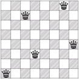

Problem G
Guarding the Chessboard
Given an n*m chessboard with some marked squares, your task is to place as
few queens as possible to guard (attack or occupy) all marked squares. Below is a solution
to an 8*8 board with every square marked. Note that queens can be placed on non-marked squares.

Input
The input consists of at most 15 test cases. Each case begins with a line containing two integers
n, m (1 < n, m < 10), the size of the chessboard. Next n lines
each contain m characters, 'X' denotes marked square, '.' denotes unmarked squares.
The last case is followed by a single zero, which should not be processed.
Output
For each test case, print the case number and the minimal number of queens needed.
Sample Input
8 8
XXXXXXXX
XXXXXXXX
XXXXXXXX
XXXXXXXX
XXXXXXXX
XXXXXXXX
XXXXXXXX
XXXXXXXX
8 8
X.......
.X......
..X.....
...X....
....X...
.....X..
......X.
.......X
0
Output for the Sample Input
Case 1: 5
Case 2: 1
Rujia Liu's Present 2: A Big Contest of Brute Force